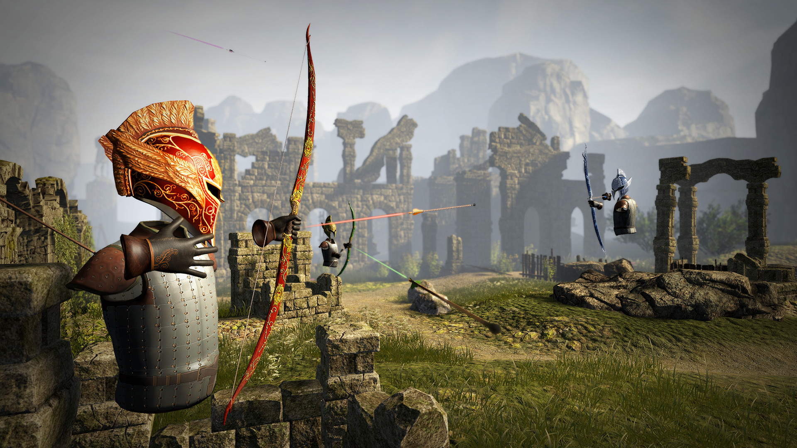

VR-аттракционы
«Виртуальный мир становится все более реальным»
«Виртуальный мир становится все более реальным»
Виртуальная реальность (VR) — искусственный, не существующий в природе мир, в который человек может полностью «погрузиться» не только как наблюдатель, но и как участник. Системы виртуальной реальности — это технические устройства и программное обеспечение, создающие для человека иллюзию присутствия в этом искусственном мире и в ряде случаев позволяющие манипулировать его объектами. В настящее время виртуальная реальность приобрила большую популярность. Все VR-устройства разделяются на три вида: проводные, беспроводные и мобильные. Все типы обладают общими характеристиками, которые нужно учитывать при выборе устройства: глубиной погружения, удобством ношения и типом подачи контента.
VR-шлемы оснащены двумя мониторами (или одним, который разделён на две части). Каждый из этих мониторов показывает отдельные изображения для каждого глаза. А чтобы правильно сфокусировать взгляд, используются линзы.
Это специализированный прибор, способный симулировать разнообразные аудиовизуальные трехмерные пространства. Состоит из пластикового (реже картонного) корпуса, экрана с перегородкой и асферических линз, которые фокусируют изображение.
Гоночные симуляторы примечательны тем, что технологии, повышающие реализм, не обязательно делают вас быстрее. Он отзывчивее, реалистичнее, обеспечивает повышенную точность ускорения и торможения.
Для более полного погружения в смоделированный мир игры используют такой гаджет, как платформа виртуальной реальности. Она служит для синхронизации действий человека в реальном мире с действиями управляемого им персонажа компьютерной игры в мире виртуальном.
Созданная специально для PlayStation VR, эта игра стала её визитной карточкой и вообще одной из знаковых для индустрии виртуальных технологий. Здесь игроки отправляются в опасное путешествие по враждебному инопланетному миру на поиски упавшей космической станции «Пилигрим» и выживших членов экипажа. В процессе нужно научиться обращаться с основным и дополнительным оружием и исследовать окружающий мир, раскрывая тайны странной аномалии, из-за которой и случился весь этот сыр-бор. Контроллер прицеливания PS VR позволяет напрямую взаимодействовать с игровым окружением, а PlayStation Camera отслеживает положение встроенных датчиков перемещения и светящегося шара, точно отражая каждый шаг игрока.
А вот в Resident Evil 7: Biohazard VR мы получили полноценную оригинальную игру, адаптированную под виртуальную реальность. Благодаря использованию шлема PlayStation VR исследование особняка сумасшедшей семейки Бейкеров пугает ещё больше — даже заядлые скептики пару раз точно подпрыгнут от страха и неожиданности, когда, например, первый раз столкнутся с плесневиками. Кроме того, в VR-версии удобнее ориентироваться и стрелять — ведь можно целиться взглядом, раздавая хэдшоты направо и налево. При этом кажется, что ты действительно сам расстреливаешь монстров.
VR-адаптация культовой уже ролевой игры The Elder Scrolls V: Skyrim от Bethesda Game Studios включает в себя саму игру, а также официальные дополнения Dawnguard, Hearthfire и Dragonborn. Но главное, с гарнитурой виртуальной реальности в Skyrim VR меняется не только точка зрения, но и сами ощущения от игры. Здесь вы можете применять мощные заклинания, действуя обеими руками независимо друг от друга, замахиваться мечом, блокировать удары и выпускать стрелы как в реальности. Дело в том, что при использовании PS Move каждый контроллер отвечает за свою руку — причём в каждую можно взять меч, щит или лук. Поэтому боевая система ощущается максимально реалистично. По-новому работают даже такие механики, как взаимодействие с картой мира и повышение уровня персонажа.
| Название | Цена |
|---|---|
| Farpoint | 2 490 руб |
| Resident Evil 7: Biohazard VR | 429 руб |
| The Elder Scrolls V: Skyrim VR | 1 999 руб |
{kind=link}
{kind=link}
{kind=link}